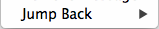
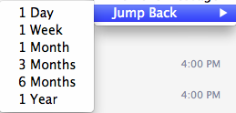

The official blog of trj14, containing guides and useful posts.
Ever wanted to look at your old, silly, Skype messages ? Have you tried to find it ? Did it take forever to do so ? Well I have a guide that can save your time.
Hover over a message and you should see an icon like this .
Click the icon shown above, and hover over 'Jump Back'. 
When you hover over Jump Back, you have 6 options to choose. You can choose 1 day to go back one day, 1 week to go back one week, and more. 
Choose one of the options given and you're done ! Enjoy reading your old messages in your silly group chat.